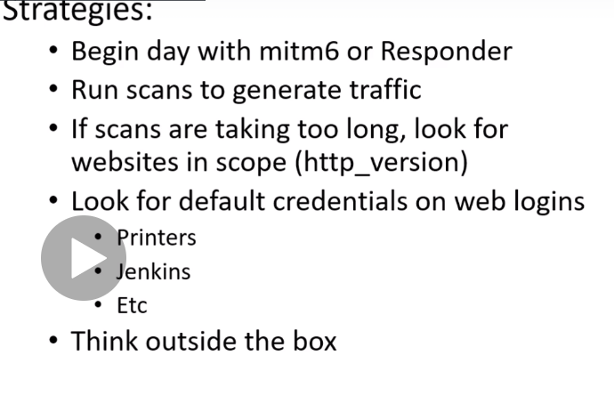

mitm6 is faster these days also responder is goood to
we want trafific tobe generated so lucnh or morning perfect time
responder also good u get to know are u getting hashes and easier to crack and stuff
if i dont see llmnr enbaled than in trouble as prev a pentest may have been done too
http_version could be used if u prefer to be silent on the network - its in metasploit
this will get picked up rarel as its using port 80 and 443 as comapred to u scanning the entire port in scan section which would create concerns na
u can get to domain admin even throug a printer too
many dont secure the printertoo whihc could be attacked by us too
start looking arouind what all is available
the more u enumerate the bette rhacker u will become